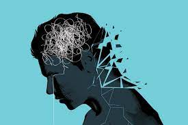
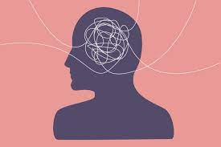
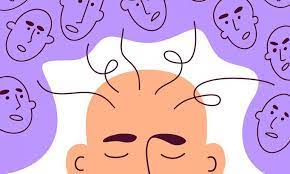

Mental Health: Common Mental Health Disorders
What are mental illnesses?
The most common types of mental illnesses are as follows:
Below are some more commonly seen mental illnesses.
Anxiety Disorders
Anxiety disorders are the most common type of mental ilnesses. People with these conditions have severe fear or anxiety, which relates to certain objects or situations. Most people with anxiety disorders will try to avoid exposure to whatever triggers their anxiety.
People might also experience physical symptoms, including:
Panic Disorders
People with a panic disorder experience regular panic attack, which involve sudden overwhelming terror or a severe sense of imminent disaster and death.
Obsessive-Compulsive Disorders (OCD)
People with OCD have obsessions and compulsions. In other words, they experience constant stressful thoughts and a powerful urge to perform repetitive acts such as washing hands.
Mood Disorders
People may also refer to mood disorders as affective disorders or depressive disorders.
People with these conditions have significant changes in mood, generally involving either mania, which is a period of high energy and elation, or depression.
Major Depression
An indivisual with major depression experiences a constant low mood and loses interest in activities and events that they previously enjoyed. They can feel prolonged periods of sadness or extreme sadness.
Bipolar Disorder
A person with bipolar disorder experiences unusual changes in their mood, energy levels, levels of activity, and ability to continue with daily life. Periods of high mood are known as manic phases while depressive phases bring on low mood.
Seasonal Affective Disorder
Reduced daylight triggers during the fall, winter and early spring months trigger this type of major depression. It is ost common in countries far from the equator.
Schizophrenia Disorders
Mental health authorities are still trying to determine wether schizophrenia is a single disorder or a group of related illnesses. It is a highly complex condition.
Signs of schizophrenia typically develop between ages of 16 and 30 years, according to the NIMH. The indivisual will have thoughts that appear fragmented, and they may also find it hard to process information.
Schizophrenia has negative and positive symptoms. Positive symptoms include delusions, thought disorders and hallucinations. Negative symptoms include withdrawal, lack of motivation and a flat or inappropriate mood.